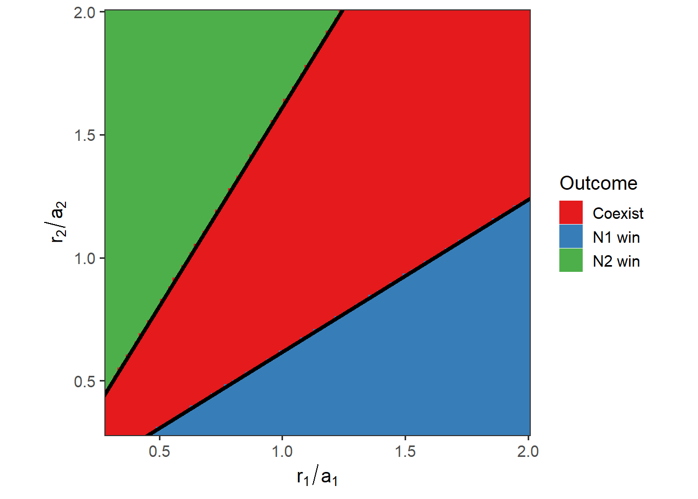

Week 13 - Parameter space for apparent competition model
Here, we are going to visualize the outcomes of apparent competition in the \(r_1/a_1\) – \(r_2/a_2\) space: \[\begin{align*} \frac{dN_1}{dt} &= r_1N_1(1-\frac{N_1}{K_1}) - a_1N_1P\\ \frac{dN_2}{dt} &= r_2N_2(1-\frac{N_2}{K_2}) - a_2N_2P\\ \frac{dP}{dt} &= e_1a_1N_1P + e_2a_2N_2P - mP. \end{align*}\] Two prey \(N_1\) and \(N_2\) grow logistically with intrinsic growth rate \(r_1\) and \(r_2\) and carrying capacity \(K_1\) and \(K_2\). Predator \(P\) consumes two prey following Holling type I functional response, with \(a_1\) and \(a_2\) representing the consumption rate of \(N_1\) and \(N_2\) by predator respectively. After consumption, the assimilation rate are \(e_1\) and \(e_2\). The death rate of predator is represented by \(m\).
Part 1: Directly simulate dynamical system
library(deSolve)
library(ggplot2)
#### ODE setup
ApparentCompetition <- function(times, state, parms) {
with(as.list(c(state, parms)), {
dN1_dt = r1 * N1 * (1 - N1 / K1) - a1 * N1 * P
dN2_dt = r2 * N2 * (1 - N2 / K2) - a2 * N2 * P
dP_dt = e1 * a1 * N1 * P + e2 * a2 * N2 * P - d * P
return(list(c(dN1_dt, dN2_dt, dP_dt)))
})
}
times <- seq(0, 3000, by = 10)
state <- c(N1 = 0.1, N2 = 0.1, P = 1)
parms <- c(r1 = 0.1, r2 = 0.1, a1 = 0.35, a2 = 0.35, e1 = 0.4, e2 = 0.5, d = 0.8, K1 = 15, K2 = 12) # Omitting r1 and r2
#### Set up parameter space of interest
r_min <- 0.1
r_max <- 0.7
n <- 100
r1_vec <- seq(r_min, r_max, length.out = n)
r2_vec <- seq(r_min, r_max, length.out = n)
comp_out <- expand.grid(r1 = r1_vec, r2 = r2_vec)
#### Create saving space for simulation output
comp_out <- as.data.frame(cbind(comp_out,
matrix(0,
nrow = dim(comp_out)[1],
ncol = length(state))))
names(comp_out) <- c("r1", "r2", "N1", "N2", "P")
#### Simulate the ODE across the parameter space
start_time <- Sys.time()
for(i in 1:dim(comp_out)[1]){
temp_parms <- parms
temp_parms["r1"] <- comp_out[i, ]$r1
temp_parms["r2"] <- comp_out[i, ]$r2
temp_out <- ode(func = ApparentCompetition,
times = times,
y = state,
parms = temp_parms)
N_final <- nrow(na.omit(temp_out))
comp_out[i, 3:5] <- temp_out[N_final, -1]
}
end_time <- Sys.time()
end_time - start_time## Time difference of 5.609919 mins#### Determine outcome status
extinct_thres <- 1e-7
comp_out$Outcome <-
ifelse(comp_out[, 3] < extinct_thres, "N2 win",
ifelse(comp_out[, 4] < extinct_thres, "N1 win", "Coexist"))
#### Visualize the competition outcomes in the grids
ggplot(comp_out, aes(x = r1/parms[3], y = r2/parms[4], z = Outcome, fill = Outcome)) +
geom_tile() +
geom_abline(intercept = 0, slope = (1 - parms[7] / (parms[5] * parms[3] * parms[8])), linewidth = 1.5) +
geom_abline(intercept = 0, slope = (1 - parms[7] / (parms[6] * parms[4] * parms[9]))^-1, linewidth = 1.5) +
labs(x = expression(r[1]/a[1]), y = expression(r[2]/a[2])) +
scale_x_continuous(expand = c(0, 0)) +
scale_y_continuous(expand = c(0, 0)) +
scale_fill_brewer(palette = "Set1") +
theme_bw(base_size = 14) +
theme(panel.grid = element_blank()) +
coord_fixed(ratio = 1) Part 2: Use analytical calculations
#### Create saving space for simulation output
r_min <- 0.1 # also try 0.01
r_max <- 0.7 # also try 1.75
n <- 100 # also try 200
r1_vec <- seq(r_min, r_max, length.out = n)
r2_vec <- seq(r_min, r_max, length.out = n)
comp_out_igr <- expand.grid(r1 = r1_vec, r2 = r2_vec)
comp_out_igr <- as.data.frame(cbind(comp_out_igr,
matrix(0,
nrow = dim(comp_out_igr)[1],
ncol = 2)))
names(comp_out_igr) <- c("r1", "r2", "IGR1", "IGR2")
#### Calculate the IGR across the parameter space
start_time <- Sys.time()
for(i in 1:dim(comp_out_igr)[1]){
temp_parms <- parms
temp_parms["r1"] <- comp_out_igr[i, ]$r1
temp_parms["r2"] <- comp_out_igr[i, ]$r2
comp_out_igr[i, 3:4] <-
with(as.list(temp_parms), {
igr_1 <- r1 - a1 * ((r2/a2) * (1 - (d/(e2*a2*K2))))
igr_2 <- r2 - a2 * ((r1/a1) * (1 - (d/(e1*a1*K1))))
c(igr_1, igr_2)
})
}
end_time <- Sys.time()
end_time - start_time## Time difference of 4.269266 secs#### Determine outcome status
comp_out_igr$Outcome <-
ifelse(comp_out_igr[, 3] < 0, "N2 win",
ifelse(comp_out_igr[, 4] < 0, "N1 win", "Coexist"))
#### Visualize the competition outcomes in the grids
ggplot(comp_out_igr, aes(x = r1/parms[3], y = r2/parms[4], z = Outcome, fill = Outcome)) +
geom_tile() +
geom_abline(intercept = 0, slope = (1 - parms[7] / (parms[5] * parms[3] * parms[8])), linewidth = 1.5) +
geom_abline(intercept = 0, slope = (1 - parms[7] / (parms[6] * parms[4] * parms[9]))^-1, linewidth = 1.5) +
labs(x = expression(r[1]/a[1]), y = expression(r[2]/a[2])) +
scale_x_continuous(expand = c(0, 0)) +
scale_y_continuous(expand = c(0, 0)) +
scale_fill_brewer(palette = "Set1") +
theme_bw(base_size = 14) +
theme(panel.grid = element_blank()) +
coord_fixed(ratio = 1)